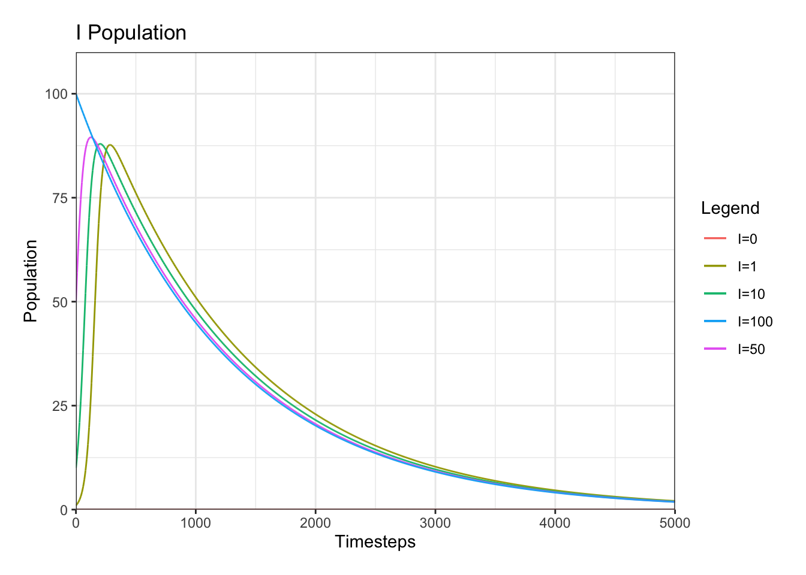
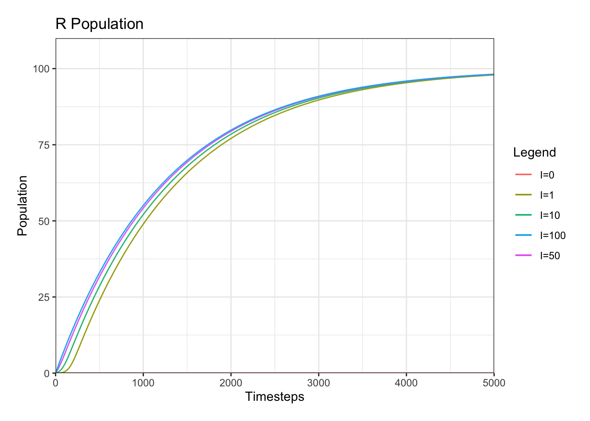

Basic SIR Model
Creation
The SIR Model is a common application of differential systems that is used to represent the progression of a disease over time. In this system, three populations in terms of time are used: S(t), I(t), and R(t). The S population represents the susceptible population, the population that is able to be infected. The I population represents those who are infected with the theoretical disease, and the R population are those who has recovered from the disease.
To create this model, we of course have to make assumptions on the basis of teh model and its parameters. To start, we define the constant that will reflect the rate of infection as the constant \(\alpha\), and the rate of recovery as a constant, \(\beta\). We also must realize that the rate of infection is dependent on both the number of people with in the infected population and the number of people within the succeptoble population. So, the overall infection rate can be expressed as \(\alpha S I\). However, the recovery rate is only dependent on the number of people within the infected population, so this can be represented as \(\beta I\). Now, placing these within a system of differential equations will yield the following.
\[\frac{dS}{dt}=- \alpha S I \\ \frac{dI}{dt} = \alpha S I - \beta I\\ \frac{dR}{dt} = \beta I \]
In this system, we must also specify the initial parameters. First, we must realize that, biologically, having the R population start at anything other than zero is unrealistic if we are modeling the beginning of a disease. So, we will define the initial value of R as \(0\). So, the entirety of the population, \(N\), is within the S and I population at the beginning of this model. We can represent this by using a constant, \(\rho\), which represents the proportion of the population \(N\) that is in the succeptible and infected populations. Therfore, the intial conditions are \(S= \rho N, I = (1- \rho)N\).
Visualization
The numerical representation of systems of differential equations can be very tedious, especially when considering the thousands of timesteps we are seeking to run with this simulation. So, a differential equations solver is the best way to visualize this system.
model.system <- function(time,state,parameters){
with(as.list(c(state,parameters)),{
dS = -a * S * I
dI = -b * I + a * S * I
dR = b * I
return(list(c(dS, dI, dR)))
}
)
}
model.parameters <- c(a = 0.0003, b = 0.0008)
dt <- 0.1 # timestep
p <- 0.75
N <- 100
timesteps <- seq(0, 3500, by = dt)
initial.conditions <- c(S = p * N, I = (1 - p) * N, R = 0)
simulation <- as.data.frame(ode(y=initial.conditions, func = model.system,
parms=model.parameters, times=timesteps))
plotS <- ggplot() +
geom_line(simulation,mapping=aes(x=time, y=S, color = 'S')) +
geom_line(simulation,mapping=aes(x=time, y=I, color = 'I')) +
geom_line(simulation,mapping=aes(x=time, y=R, color = 'R')) +
labs(x="Timesteps", y="Population", color='Legend') +
scale_x_continuous(expand=c(0,0)) +
scale_y_continuous(expand=c(0,0), limits=c(0, 1.1*N)) +
theme_bw() +
ggtitle("SIR Model")+
theme(plot.margin = margin(15,15,15,15))
plotSThe packages “ggplot”, “deSolve”, and “ggpubr” are used within this code. To begin, the model is defined as “model.system”. Next, the model parameters are defined as a vector in “model.parameters”, and the initial conditions, “initial.conditions”, are defined as calculated above. Next, the simulation specific data is required. The timesteps, dt, the \(\rho\) value, N, and the amount of timesteps are specified next.
Next, this information is used in the command called “simulation”, where an ode (ordinary differential equation) solver is used to compute the populations at the timesteps specialized. Once this is ran, “plotS” helps to visualize this data into a graph with labels, scales, a title and a theme as specified. Individual lines of visualized data are added using “geom_line”, and the information graphed on each axis is specified.
Interpretation
An important aspect of solving this system of differential equations is predicting its equilibrium values and determining what type of equilibrium values are present.
An equilibrium, or initial condition where the populations do not change in an infinite amount of time, can be determined analytically and verified numerically. We can start the analytical approach by setting the derivative of the basic SIR model to zero, as they would be in equilibrium.
\[0=- \alpha S I \\ 0 = \alpha S I - \beta I\\ 0 = \beta I \]
From this, we can see that the only way \(\frac{dS}{dt}=0\) is if \(I=0\). Likewise, \(\frac{dR}{dt}=0\) if and only if \(I=0\). On the on the hand, \(\frac{dI}{dt}=0\) when \(I=0\) or if \(\alpha S I = \beta I\). However, since only \(\frac{dI}{dt}=0\) at this point, it is not an equilibrium point for the whoel system. Therefore, the only equilibrium point for the entire system occurs when \(I=0\).
This can also be confirmed numerically in the following plots. These plots compare the curves of population S, I, and R at different initial I populations as specified in the legend.
################ SIR model
model.system <- function(time,state,parameters){
with(as.list(c(state,parameters)),{
dS = -a * S * I
dI = -b * I + a * S * I
dR = b * I
return(list(c(dS, dI, dR)))
}
)
}
model.parameters <- c(a = 0.0003, b = 0.0008)
dt <- 0.1
p <- 0.75
N <- 100
timesteps <- seq(0, 5000, by=dt)
initial.conditions1 <- c(S = 100, I = 0, R=0)
initial.conditions2 <- c(S = 99, I = 1, R=0)
initial.conditions3 <- c(S = 90, I = 10, R=0)
initial.conditions4 <- c(S = 50, I = 50, R=0)
initial.conditions5 <- c(S = 0, I = 100, R=0)
simulation1 <- as.data.frame(ode(y=initial.conditions1, func = model.system,
parms=model.parameters, times=timesteps))
simulation2 <- as.data.frame(ode(y=initial.conditions2, func = model.system,
parms=model.parameters, times=timesteps))
simulation3 <- as.data.frame(ode(y=initial.conditions3, func = model.system,
parms=model.parameters, times=timesteps))
simulation4 <- as.data.frame(ode(y=initial.conditions4, func = model.system,
parms=model.parameters, times=timesteps))
simulation5 <- as.data.frame(ode(y=initial.conditions5, func = model.system,
parms=model.parameters, times=timesteps))
plotS <- ggplot() +
geom_line(simulation1,mapping=aes(x=time, y=S, color = 'I=0')) +
geom_line(simulation2,mapping=aes(x=time, y=S, color = 'I=1')) +
geom_line(simulation3,mapping=aes(x=time, y=S, color = 'I=10')) +
geom_line(simulation4,mapping=aes(x=time, y=S, color = 'I=50')) +
geom_line(simulation5,mapping=aes(x=time, y=S, color = 'I=100')) +
labs(x="Timesteps", y="Population", color='Legend') +
scale_x_continuous(expand=c(0,0)) +
scale_y_continuous(expand=c(0,0), limits=c(0, 1.1*N)) +
theme_bw() +
ggtitle("S Population")+
theme(plot.margin = margin(15,15,15,15))
plotI <- ggplot() +
geom_line(simulation1,mapping=aes(x=time, y=I, color = 'I=0')) +
geom_line(simulation2,mapping=aes(x=time, y=I, color = 'I=1')) +
geom_line(simulation3,mapping=aes(x=time, y=I, color = 'I=10')) +
geom_line(simulation4,mapping=aes(x=time, y=I, color = 'I=50')) +
geom_line(simulation5,mapping=aes(x=time, y=I, color = 'I=100')) +
labs(x="Timesteps", y="Population", color='Legend') +
scale_x_continuous(expand=c(0,0)) +
scale_y_continuous(expand=c(0,0), limits=c(0, 1.1*N)) +
theme_bw() +
ggtitle("I Population")+
theme(plot.margin = margin(15,15,15,15))
plotR <- ggplot() +
geom_line(simulation1,mapping=aes(x=time, y=R, color = 'I=0')) +
geom_line(simulation2,mapping=aes(x=time, y=R, color = 'I=1')) +
geom_line(simulation3,mapping=aes(x=time, y=R, color = 'I=10')) +
geom_line(simulation4,mapping=aes(x=time, y=R, color = 'I=50')) +
geom_line(simulation5,mapping=aes(x=time, y=R, color = 'I=100')) +
labs(x="Timesteps", y="Population", color='Legend') +
scale_x_continuous(expand=c(0,0)) +
scale_y_continuous(expand=c(0,0), limits=c(0, 1.1*N)) +
theme_bw() +
ggtitle("R Population")+
theme(plot.margin = margin(15,15,15,15))
plotSplotI
plotR
From this, we can verify that when \(I=0\), the population remains unchanged. We also see that wherever I starts, as time progresses the population of I approaches \(0\). Mathematically and biologically this mkaes sense because there is no chance of reinfection. In other words, there is no way for somebody in the recovered population to become susceptible again. Overall, we can state that if I starts above \(0\), all S and I populations approach \(0\) while the R population approaches N. If \(I=0\) initially, the system remains unchanged. There is no use to decifer what happens when I is below \(0\) because it is biologically impossible, therefore useless in this model.
Additional Analysis
Although the values of the equilibrium are very useful to know in a mathematical sense, often in a real population this equilibrium can take months to years to reach. Often times, epidemiologists are more interested in the short term behavior of a disease. Scientists often seek to “flatten the curve” or slower the initial spread of the disease. This is because they seek to not overwhelm the resources of society by having too many people infected in a population at one time. To determine how to best limit the number of people infected in a short time period, numerical anaysis on the individual parameters can be used.
The ability to manipulate data much more easily is gained when numerical solutions are computed to differential equations through a computer. Because of this, the model is able to be evaluated at a much higher level.
The initial behavior of the system is almost solely dependent on the parameters themselves, as well as the initial conditions (but initial conditions are likely not able to be changed by human intervention, so they are a less interesting result). The parameters are able to be manipulated by human discover by the development of a treatment that speeds up the rate of recover, a vaccine that lowers the rate of infection, or, later one, differences in behavior between populations.
The following graph is a representation of this model when varying the \(\alpha\) and \(\beta\) values. This only depicts the I population because in this situation the only curve we seek to flatten is the I population, therefore it is the only relevant graph. The I poulation curves are graphed alongside one another and are varied by parameter as specified in the legend.


By analyzing these graphs it is seen that with a low infection rate \(\alpha\) and a high recovery rate \(\beta\) are necessary to create the lowest infection curve. This would make sense biologically because if people are recovering faster and getting infected slower, less infections overall would be expected. It is important to complete this evaluation of the SIR model and sny system of differential equation. The results must also have to make sense biologically, because if they do not it would not make a very accurate model. Often times, other experts, such as epidemiologists in this case, would be consulted to confirm whether or not this model is a accurate representation of what is desired.
Although this model is useful in learning the basic of the SIR model, it is largely inaccurate in modeling the complexities of real life disease progression. Because of this, this model is more often than not adjusted to better represent individual disease progression over time. This is exactly what we do in the following page.